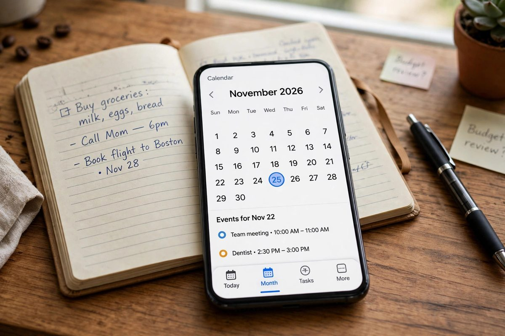
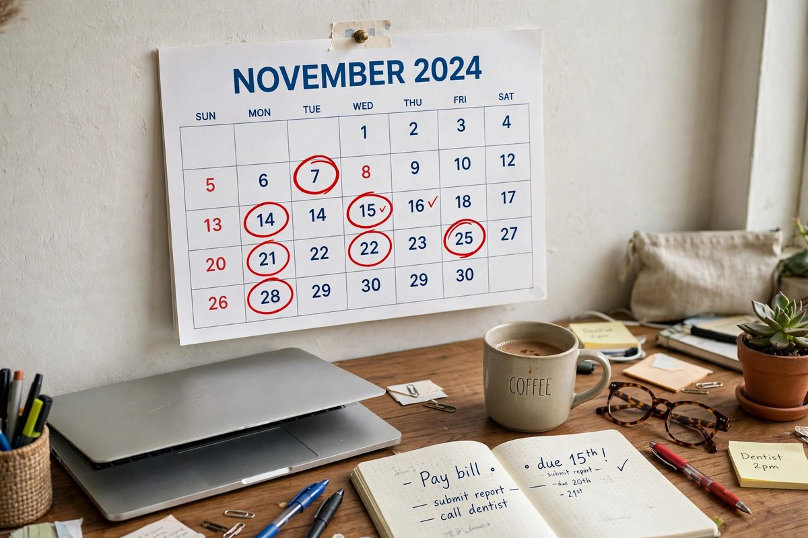

How It Works
Our ovulation calculator estimates your ovulation day as 14 days before your next period, which is the most consistent way to predict it from calendar dates. Enter the first day of your last period and your average cycle length, and you will get your estimated ovulation date, your six-day fertile window, and your next expected period.
Calendar maths works best when your cycles are regular. If your cycles vary, combine the result with body signs: clear, stretchy cervical mucus in the days before ovulation, a positive ovulation test, or a temperature rise afterwards. Our step-by-step guide explains how to get the most accurate result, and the myths guide clears up the most common misunderstandings.
If your cycles are irregular, or you have a condition such as PCOS, treat calendar estimates as a rough guide and lean on body signs and tests instead. And if you have been trying to conceive for a year, or six months if you are over 35, our guide on when to see a doctor explains what happens next.
All Calculators
Find your ovulation date, fertile window and next period from your last period and cycle length.Fertile Window Calculator
See your most fertile days each month, day by day, around your estimated ovulation date.Next Period Calculator
Predict the date of your next three periods from your last period start date and cycle length.Cycle Length Tracker
Work out your average cycle length from your last three period start dates.
Guides

How to Use an Ovulation Calculator
A step-by-step guide to getting an accurate ovulation estimate from your last period and cycle length.

Understanding Your Menstrual Cycle
What happens during each phase of the menstrual cycle, and how the phases connect to ovulation and fertility.

Your Fertile Window Explained
How the six fertile days of each cycle work, why timing matters, and how to find your window.

Ovulation Symptoms to Watch For
The physical signs that ovulation is near, how to read them, and which ones are actually reliable.
Irregular Cycles and Ovulation
Why cycles vary, how to estimate ovulation when they do, and when irregular periods need a doctor's opinion.
Ovulation After Stopping Birth Control
When ovulation returns after the pill, patch, injection or implant, and what to expect in the first months.
Tracking Basal Body Temperature
How to chart your morning temperature, read the rise after ovulation, and use the chart to time conception.

Cervical Mucus and Fertility
What fertile mucus looks like, how it changes across your cycle, and how to use it to find your fertile days.

Ovulation Test Strips: How to Use Them
How LH test strips work, when to test, how to read the lines, and the mistakes that cause false results.
Conceiving After 35
What changes with age, how long to try before seeking help, and practical steps for trying to conceive in your late 30s and 40s.
Ovulation and PCOS
How polycystic ovary syndrome affects ovulation, why cycles become irregular, and how to track fertility with PCOS.

The Luteal Phase Explained
What the luteal phase is, why it lasts 12 to 16 days, and what a short or long luteal phase can mean.

Period Tracker vs Ovulation Calculator: Which Do You Need?
How period trackers and ovulation calculators differ, what each one is good at, and how to use them together.

The Best Time to Conceive Each Month
How to time intercourse around your fertile window, how often to try, and what the evidence says about timing.
Ovulation Myths Debunked
The most common wrong ideas about ovulation, fertility and conception — and what is actually true.

Is Cycle Length Variation Normal?
How much your cycle can vary month to month, what causes the changes, and when variation needs checking.

Planning a Pregnancy: A Simple Timeline
A month-by-month plan for preparing to conceive, from folic acid and health checks to timing and testing.
Ovulation Pain (Mittelschmerz) Explained
What ovulation pain feels like, why it happens, how to tell it from other pain, and when to see a doctor.
When to See a Doctor About Fertility
The timelines for seeking help, what the first appointment involves, and the tests a doctor usually orders.
Planning With an Ovulation Calendar
How to build a simple ovulation calendar, keep it accurate month to month, and use it to plan ahead.
Frequently Asked Questions
How do I calculate my ovulation date?
Subtract 14 days from your next expected period. If your cycle is 28 days, ovulation is around day 14; if it is 32 days, it is around day 18. Our calculator does this for you from your last period date and cycle length.
What is the fertile window?
The six days when conception is possible: the five days before ovulation plus ovulation day. The two to three days before ovulation are usually the most fertile.
Can I get pregnant outside the fertile window?
The chance is very low, but the window can shift if ovulation comes earlier or later than expected, so calendar estimates are not reliable contraception.
How accurate is this calculator?
It is an estimate based on averages. It is most accurate for regular cycles. Combining it with cervical mucus changes or ovulation tests improves accuracy.
What if my periods are irregular?
Use the result as a rough guide only, and rely more on body signs and ovulation tests. See a doctor if cycles are regularly outside 21 to 35 days.
Is my data stored anywhere?
No. The calculation runs in your browser, and nothing you enter is sent or stored.